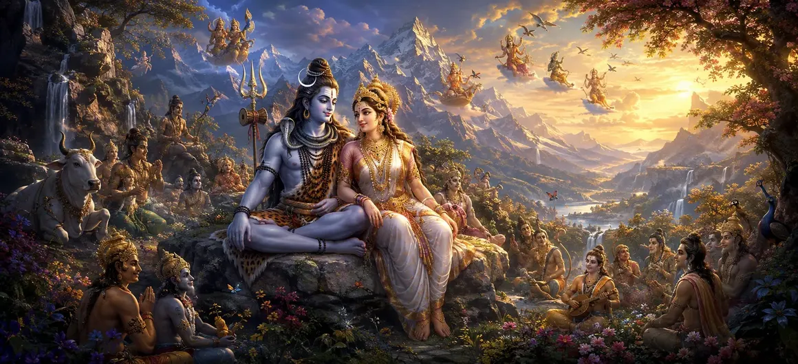

मंदार पर्वत पर शिव की दिव्य क्रीड़ाएँ
वायवीय संहिता का चौबीसवाँ अध्याय पवित्र मंदरा पर्वत पर भगवान शिव की मनमोहक और दिव्य लीलाओं को उजागर करता है।
ऋषि वायु ने खूबसूरती से वर्णन किया है कि कैसे सर्वोच्च भगवान दिव्य प्राणियों और ऋषियों को समान रूप से मोहित करते हुए, आनंदमय दिव्य खेलों में संलग्न होते हैं।
यह अध्याय कथा को लौकिक सुधार से दिव्य प्रेम और आनंद के आनंदमय उत्सव में परिवर्तित करता है।
अध्याय 24 की मुख्य बातें
मंदरा पर्वत की महिमा
भगवान शिव की दिव्य क्रीड़ाओं की पवित्र और राजसी सेटिंग को दर्शाता है।
पारलौकिक लीलाएँ
सर्वोच्च भगवान की खुशी और आनंदमय गतिविधियों का विवरण।
दिव्य आनंद
दिखाता है कि कैसे ऋषि और देवता शिव की लीला देखने और जश्न मनाने के लिए इकट्ठा होते हैं।
शुद्ध चेतना
यह दर्शाता है कि दिव्य खेल किस प्रकार परम वास्तविकता की चंचल अभिव्यक्तियाँ हैं।
ईश्वरीय कृपा
मंदरा पर्वत के आसपास के उत्थानशील आध्यात्मिक वातावरण पर प्रकाश डालता है।
परिवर्तन की प्रस्तावना
अध्याय 25 में देवी को गोरा रंग प्राप्त करने के लिए मंच तैयार किया गया है।
इस अध्याय में मुख्य विषय
मंदरा पर्वत का पवित्र धाम
मंदार पर्वत दिव्य वैभव से चमकता है, सुगंधित फूलों, दिव्य वृक्षों और दीप्तिमान खनिज चोटियों से सुसज्जित है।
यह एक शानदार अभयारण्य के रूप में कार्य करता है जहां भगवान शिव दिव्य शांति और आनंदमय लीलाओं का आनंद लेते हैं।
शिव की दिव्य क्रीड़ाओं का वर्णन
ऋषि वायु बताते हैं कि कैसे भगवान शिव, देवी पार्वती के साथ, ब्रह्मांड को मंत्रमुग्ध करने वाली चंचल और आनंदमय गतिविधियों में संलग्न होते हैं।
ये खेल सामान्य भौतिक क्रियाओं से परे, दिव्य आनंद और स्वतंत्रता की शुद्ध अभिव्यक्ति के रूप में प्रकट होते हैं।
ऋषियों और दिव्य प्राणियों का जमावड़ा
असाधारण चमक और मधुर वातावरण से आकर्षित होकर, महान ऋषि, सिद्ध और गंधर्व मंदरा पर्वत पर आते हैं।
वे समर्पित हृदय से स्तुति भजन गाते हुए, भगवान की गौरवशाली लीलाओं को देखने में डूब जाते हैं।
आनंदमय और शांत वातावरण
मंदरा पर्वत के आसपास का वातावरण पूर्ण शांति प्रदान करता है, जो यहां आने वाले लोगों के सभी द्वंद्वों और दुखों को दूर कर देता है।
ठंडी हवाएँ दिव्य फूलों की सुगंध लेकर आती हैं, जो सर्वोच्च ध्यान और भक्ति के लिए एक आदर्श वातावरण बनाती हैं।
दिव्य लीला के स्वरूप को समझना
ऋषि वायु बताते हैं कि भगवान शिव की क्रीड़ाएं सांसारिक उद्देश्यों से बंधी नहीं हैं, बल्कि उनके स्वतंत्र, आनंदमय स्वभाव से उत्पन्न होती हैं।
इस सत्य को समझने से साधकों को भ्रम से मुक्ति मिलती है और भगवान के प्रति गहन भक्ति की प्रेरणा मिलती है।
लीलाओं का आध्यात्मिक महत्व
मंदरा पर्वत पर खेल सर्वोच्च चेतना और प्रेमपूर्ण मिलन में अभिनय करने वाली दिव्य ऊर्जा के बीच सामंजस्य का प्रतीक है।
इन लीलाओं का चिंतन करने से मन शुद्ध होता है और आंतरिक आध्यात्मिक जागृति मिलती है।
अध्याय 25 की ओर
मंदरा पर्वत पर शिव की लीलाओं के आनंदमय चित्रण के बाद, ऋषि वायु ने अध्याय 25, 'देवी गोरा रंग प्राप्त करती है' का परिचय दिया।
अध्याय 25 में देवी पार्वती के दिव्य परिवर्तन और पवित्र इतिहास की निरंतरता का विवरण दिया गया है।
अध्याय 24 की मुख्य शिक्षाएँ
आनंदमय स्वतंत्रता
भगवान शिव के कार्य सर्वोच्च पारलौकिक आनंद की शुद्ध अभिव्यक्ति हैं।
पवित्र अभयारण्य
मंदरा पर्वत जैसे दिव्य निवास परम शांति और भक्ति का संचार करते हैं।
माया को पार करना
दिव्य लीलाओं का ध्यान करने से आत्मा सांसारिक मोह-माया से मुक्त हो जाती है।
दिव्य सद्भाव
चेतना और ऊर्जा का मिलन शाश्वत ब्रह्मांडीय आनंद पैदा करता है।
भक्त साधु
सच्चे साधकों को दैवीय कृपा देखने में सर्वोच्च संतुष्टि मिलती है।
सतत गाथा
अध्याय 25 में देवी के दिव्य परिवर्तन की ओर सहजता से ले जाता है।
आध्यात्मिक चिंतन
मंदरा पर्वत पर भगवान शिव की दिव्य क्रीड़ाएं हमें याद दिलाती हैं कि परम वास्तविकता केवल कठोर या कठोर नहीं है, बल्कि भक्ति के माध्यम से अनुभव किए जाने वाले शुद्ध, आनंदमय आनंद का सागर है।
अध्याय 24 का संदेश जीना
सर्वोच्च की पारलौकिक प्रकृति पर चिंतन करके आंतरिक शांति और आनंद पैदा करें।
जीवन के सभी भावों में दिव्यता देखते हुए, दैनिक कार्यों को भक्ति के प्रसाद में बदलें।
चिंतन और आध्यात्मिक नवीनीकरण के लिए शांत वातावरण की तलाश करें।
प्रमुख आध्यात्मिक अवधारणाएँ
मंदार पर्वत पर भगवान शिव की दिव्य क्रीड़ा का रहस्योद्घाटन।
सर्वोच्च पारलौकिक आनंद और आनंद का प्रत्यक्ष अनुभव।
प्रबुद्ध ऋषियों द्वारा दिव्य लीलाओं का संग्रह और अवलोकन।
शुद्ध चेतना का स्वरूप चंचल दिव्य अनुग्रह के रूप में प्रकट होता है।
दिव्य ऊर्जा और सर्वोच्च चेतना का सामंजस्यपूर्ण मिलन।
अध्याय 25 में देवी के गोरा रंग प्राप्त करने की प्रस्तावना।
अध्याय सारांश
वायवीय संहिता अध्याय 24 मंदार पर्वत पर शिव की दिव्य क्रीड़ा प्रस्तुत करता है। मंदार पर्वत की पवित्र सेटिंग, भगवान शिव की दिव्य लीलाएं, ऋषियों की आनंदमय सभा और दिव्य लीला की प्रकृति पर प्रकाश डालते हुए, यह अध्याय पाठक को सर्वोच्च आध्यात्मिक आनंद में डुबो देता है। यह अध्याय 25, 'देवी को गोरा रंग प्राप्त होता है' के लिए कथा तैयार करता है।
अक्सर पूछे जाने वाले प्रश्न
1. वायवीय संहिता अध्याय 24 का प्राथमिक विषय क्या है?
अध्याय 24 में भगवान शिव की दिव्य लीलाओं, आनंदमय क्रीड़ाओं और भव्य मंदार पर्वत पर दिव्य कृपा का विवरण दिया गया है।
2. इस कथा में मंदरा पर्वत महत्वपूर्ण क्यों है?
मंदरा पर्वत भगवान शिव की दिव्य क्रीड़ाओं और देवी पार्वती तथा दिव्य प्राणियों के साथ आनंदमय लीलाओं के लिए एक पवित्र पृष्ठभूमि के रूप में कार्य करता है।
3. इस अध्याय में भगवान शिव की दिव्य क्रीड़ाओं का वर्णन किस प्रकार किया गया है?
उन्हें सर्वोच्च आनंद, आनंद और पारलौकिक अनुग्रह की अभिव्यक्ति के रूप में वर्णित किया गया है जो संतों और देवताओं के दिलों को समान रूप से मोहित कर लेता है।
4. मंदरा पर्वत पर शिव की क्रीड़ाएँ किस आध्यात्मिक सत्य को व्यक्त करती हैं?
वे बताते हैं कि सर्वोच्च भगवान के कार्य शुद्ध चेतना की चंचल अभिव्यक्तियाँ हैं, जो ब्रह्मांड में आनंद और मुक्ति लाते हैं।
5. वायवीय संहिता में इन दिव्य लीलाओं का वर्णन कौन करता है?
ऋषि वायु वायवीय संहिता की शिक्षाओं के भाग के रूप में एकत्रित ऋषियों को ये पवित्र इतिहास सुनाते हैं।
6. अध्याय 24 के बाद नेविगेशन के लिए अगला अध्याय कौन सा है?
नेविगेशन के लिए अगले अध्याय का शीर्षक 'देवी गोरा रंग प्राप्त करती है' है।
"मंदरा पर्वत पर भगवान की दिव्य क्रीड़ा में, ब्रह्मांड शुद्ध आनंद की शाश्वत लय में नृत्य करता है।"
वायवीय संहिता के माध्यम से जारी रखें
अध्याय 24 मंदार पर्वत पर शिव की दिव्य क्रीड़ाओं का अन्वेषण करता है। जारी रखें देवी को गोरा रंग प्राप्त होता है।